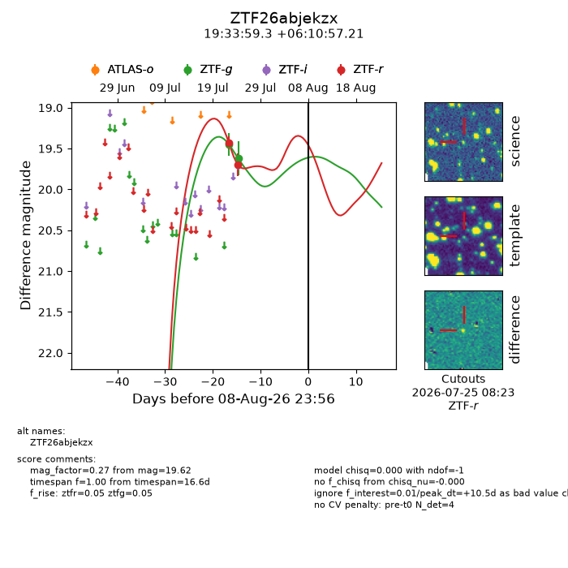
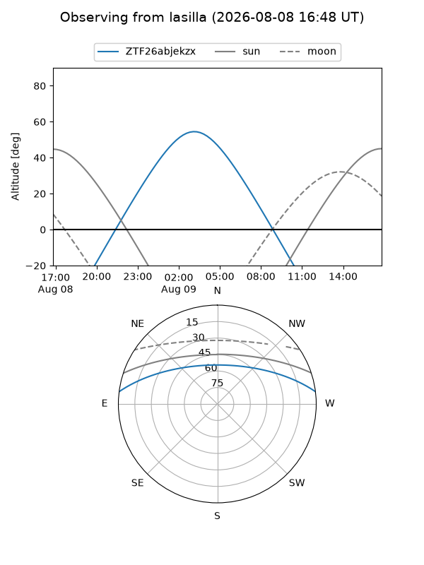
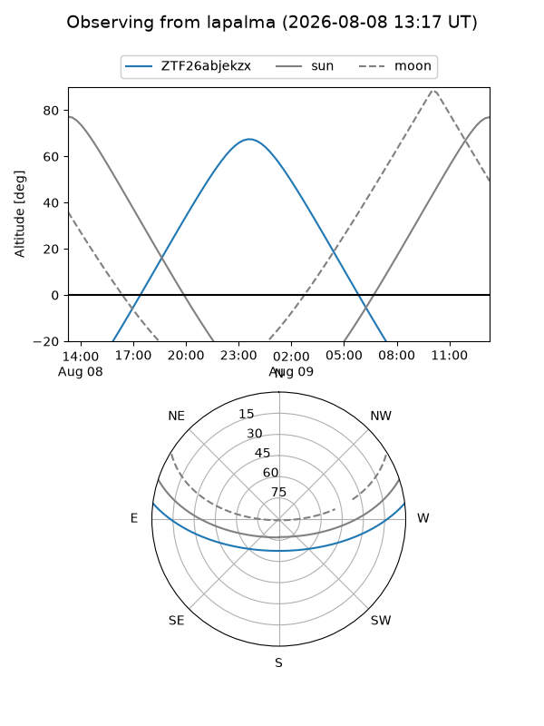
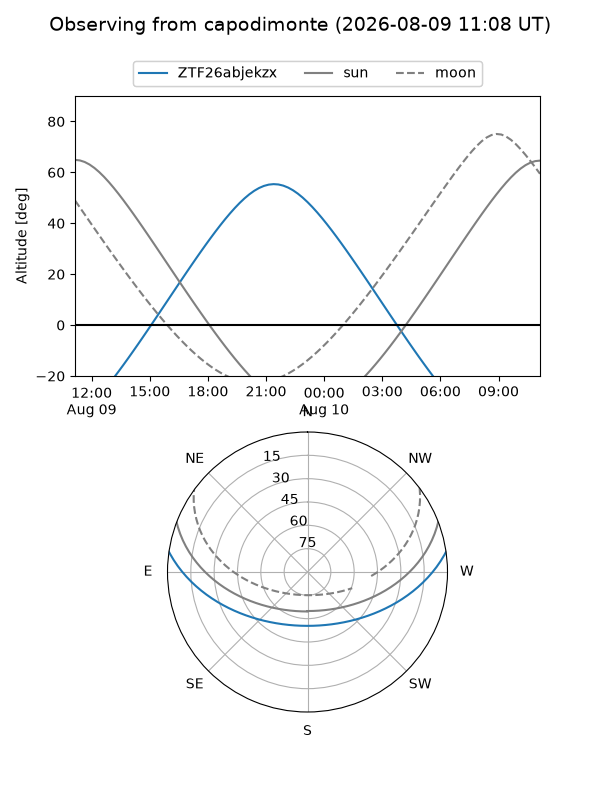
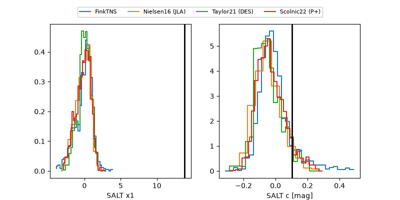

ZTF26abjekzx
Target ZTF26abjekzx at 2026-08-09 11:17
Aliases and brokers:
FINK-ZTF: ztf.fink-portal.org/ZTF26abjekzx
Lasair-ZTF: lasair-ztf.lsst.ac.uk/objects/ZTF26abjekzx
ALeRCE-ZTF: alerce.online/object/ZTF26abjekzx
Direct TNS query: direct search
alt names
ZTF26abjekzx (ztf,fink_ztf)
Coordinates:
equatorial (ra, dec) = 293.4971,+6.18256
equatorial (HMS+DMS) = 19:33:59.31,+06:10:57.21
galactic (l, b) = (43.3433,-6.55896)
Flags:
peak dt: +11.0
Photometry:
last ztfg=19.62, ztfr=19.70
2 ztfg, 2 ztfr detections
Lightcurve

Visibility



Additional plots
